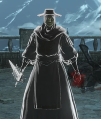

|  |
Londor Pale ShadeThe Pale Shades of the Sable Church are all undying Hollows, giving rise to much fear and
contempt. Pale Shades, colloquially known as "Harlots of Death", are assassins of the Sable Church of Londor. They are undying hollows who perform atrocities in the name of their sect, covering their darkly shriveled appearance with a golden sneering mask. The Manikin Claws are their weapon of choice. |